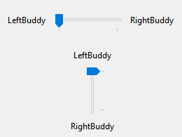
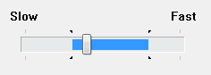

Slider control
The Slider control allows the user to pick a numerical value by dragging a thumb on a slider. Commonly also referred to as a TrackBar in Win32 programming.

Slider Range
To set the range of the slider, use the Maximum and Minimum properties. To set the value of the slider, set the Value property:
// example: allow millisecond input, 1 ms - 1 s
slider1.Minimum = 1;
slider1.Maximum = 1000;
slider1.Value = 500;
Buddy Controls
A Slider can have buddy controls that can appear on the left or right if the Slider is horizontal or on the top or bottom when the Slider is vertical.

To set the buddy controls, use the LeftBuddy and RightBuddy properties:
slider1.LeftBuddy = label1;
slider1.RightBuddy = label2;
Tip
You can assign any control as the buddy of a slider, including another slider! The only exceptions to this are Forms and the slider that you're setting the buddy on itself.
Orientation
A Slider can be set to Horizontal or Vertical orientation:
slider1.Orientation = Orientation.Vertical;
Reverse Sliders
You can reverse a slider to make it so that smaller numbers mean higher and larger numbers mean lower.
slider1.Reversed = true;
You can also reverse the input of the slider separately, by setting the ReverseInput property:
slider1.ReverseInput = true;
Thumb
The thumb on the Slider is the actual handle you drag. In the screenshot below, the blue part is the thumb:

The thumb may look different in different visual styles. For example, this is how a Slider may look like under the Aero visual style in Windows Vista or Windows 7. Note the fact that the thumb under this visual style is a silver color:
To hide the thumb, use the IsThumbVisible property:
slider1.IsThumbVisible = false;
By default, the thumb is automatically sized to fit the Slider. To override the width, set the FixedLength property to true and use the ThumbLength property to specify the desired length.
slider1.FixedLength = true;
slider1.ThumbLength = 10;
To get the current Rectangle size of the thumb, use the ThumbRect property.
Slider Selection Range
The selection range allows you to define a range that is highlighted by the Slider:


The slider will also show triangular ticks marks at the start and end of the range. To set the selection range, set the ShowSelectionRange property to true and use the SelectionRangeStart and SelectionRangeEnd properties to set the desired range:
slider1.ShowSelectionRange = true;
slider1.SelectionRangeStart = 25;
slider1.SelectionRangeEnd = 75;
To clear the selection range, call the ClearSelectionRange method.
Note
The slider's selection range does not affect its functionality in any way. It is up to the application to implement the range. You might do this in one of the following ways:
- Use a selection range to enable the user to set maximum and minimum values for some parameter. For example, the user could move the slider to a position and then click a button labeled Max. The application then sets the selection range to show the values chosen by the user.
- Limit the movement of the slider to a predetermined subrange within the control, by handling the ValueChanging event and disallowing any movement outside the selection range. You might do this, for example, if the range of values available to the user can change because of other choices the user has made, or according to available resources.
Ticks
The Slider can be in one of three tick modes: None, Auto, or Custom. None indicates no ticks. Auto indicates ticks will show up on every single value in the Slider's available range of values. Custom indicates that ticks will show up every X values in the slider's range, where X is the value of the TickFrequency property.
To set the tick mode, set the TickMode property to the desired mode:
slider1.TickMode = SliderTickMode.None;
To use a custom tick amount, set the TickMode property to SliderTickMode.Custom, and set the TickFrequency property to the desired frequency:
slider1.TickMode = SliderTickMode.Custom;
slider1.TickFrequency = 10;
When using a TickMode of Custom, you can also manually add ticks individually:
slider1.AddTick(5);
Note
Once a tick is added using AddTick, you cannot remove it. If you want to remove a certain tick, you must call the ClearTicks method to clear the ticks and re-add the ticks back:
// add some ticks...
slider1.AddTick(10);
slider1.AddTick(12);
slider1.AddTick(17);
// to remove the tick for 12:
// clear the ticks...
slider1.ClearTicks();
// ...and add back the ticks we want and exclude the ones we don't want
slider1.AddTick(10);
slider1.AddTick(17);
This is a Windows limitation.
To get the current tick positions, call the GetTickPosition, GetTickCount, or GetTickPositions methods.
Large and Small Change (page/line size)
The small change (also called the "line size") is the amount the Slider moves after performing an action such as moving the slider with the arrow keys. To set the small change, use the SmallChange property:
slider1.SmallChange = 1;
The large change (also called the "page size") is the amount the Slider moves after performing an action such as moving the slider with the PageUp or PageDown keys. To set the large change, use the LargeChange property:
slider1.LargeChange = 5;
Tooltips
The Slider can provide tooltips when the user hovers over the thumb to show the current value. To show the tooltip, use the ShowToolTip property:
slider1.ShowToolTip = true;
You can also customize the side where the tooltip appears. To set the tooltip side, use the ToolTipSide property:
slider1.ToolTipSide = SliderToolTipSide.Left; // or: Top, Bottom, Right
Validation
You can validate the value the user drags the slider to and accept or block it. To validate the Slider's value, subscribe to the ValueChanging event. The ValueChanging event fires before the slider’s value is updated, allowing you to validate or cancel the change.
slider1.ValueChanging += Slider1_ValueChanging;
In the event, perform the neccessary validation checks and set e.Cancel to true if you want to block the movement operation.
private void Slider1_ValueChanging(object sender, SliderValueChangingEventArgs e)
{
// peform validation checks...
e.Cancel = true;
}